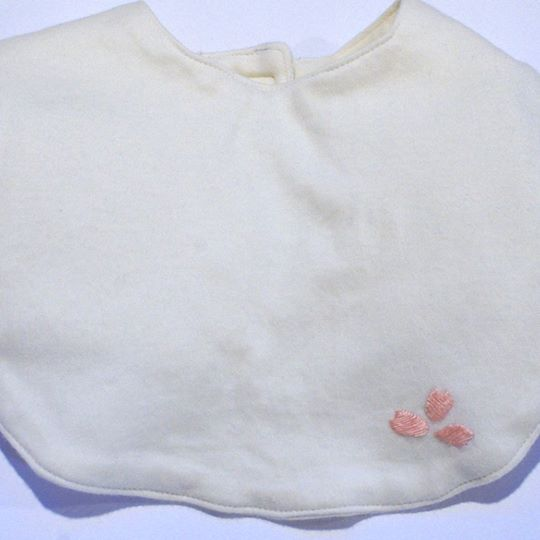
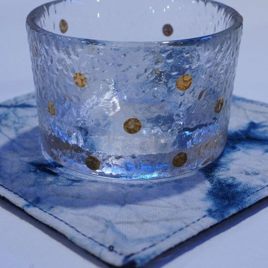
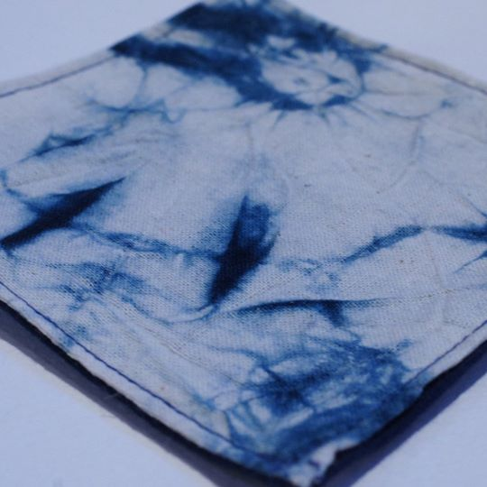

<!DOCTYPE HTML>
<!--
	Editorial by HTML5 UP
	html5up.net | @ajlkn
	Free for personal and commercial use under the CCA 3.0 license (html5up.net/license)
-->
<html>

<head>
	<title>Generic - Editorial by HTML5 UP</title>
	<meta charset="utf-8" />
	<meta name="viewport" content="width=device-width, initial-scale=1, user-scalable=no" />
	<!--[if lte IE 8]><script src="assets/js/ie/html5shiv.js"></script><![endif]-->
	<link rel="stylesheet" href="assets/css/main.css" />
	<!--[if lte IE 9]><link rel="stylesheet" href="assets/css/ie9.css" /><![endif]-->
	<!--[if lte IE 8]><link rel="stylesheet" href="assets/css/ie8.css" /><![endif]-->
</head>

<body>

	<!-- Wrapper -->
	<div id="wrapper">

		<!-- Main -->
		<div id="main">
			<div class="inner">

				<!-- Header -->
				<header id="header">
					<a href="index.html" class="logo">
						<strong>一 生 一 色 染 織</strong></a>
					<ul class="icons"></ul>
				</header>

				<!-- Content -->
				<section>
					<header class="main">
						<h1>產 品</h1>
					</header>

					<span class="image main">
						
					</span>

					<p>Donec eget ex magna. Interdum et malesuada fames ac ante ipsum primis in faucibus. Pellentesque venenatis dolor imperdiet
						dolor mattis sagittis. Praesent rutrum sem diam, vitae egestas enim auctor sit amet. Pellentesque leo mauris, consectetur
						id ipsum sit amet, fergiat. Pellentesque in mi eu massa lacinia malesuada et a elit. Donec urna ex, lacinia in purus
						ac, pretium pulvinar mauris. Curabitur sapien risus, commodo eget turpis at, elementum convallis elit. Pellentesque
						enim turpis, hendrerit.</p>

					<hr class="major" />

					<div class="posts">
						<article>
							<a href="#" class="image">
								
							</a>
							<h3>飛吧！有機彩棉小天使圍兜</h3>
							<p>產品詳情</br></br>
								最貼近肌膚的，怎能不挑剔？</br>
								透氣佳、吸汗快、不粘黏的有機棉，敏感體質的寶寶也可安心使用，是作為圍兜的不二首選。細緻的親膚感，一摸就愛上，很適合小寶寶的柔嫩肌膚。</br>
								有機彩棉和人的皮膚一樣，有著各種的色彩。淡淡的鵝黃色，是原生彩棉的天然色調。</br>
								透氣佳、吸汗快、不粘黏的有機棉，敏感體質的寶寶也可安心使用，是作為圍兜的不二首選。細緻的親膚感，一摸就愛上，很適合小寶寶的柔嫩肌膚。</br></br>
								▲ 須加運費＄60，手作商品須等7-10天</p>
							<p>NT$500</p>
							<ul class="actions">
								<li>
									<a href="https://www.facebook.com/commerce/products/1643774989063678/" class="button" target="_blank">購買</a>
								</li>
							</ul>
						</article>
						<article>
							<a href="#" class="image">
								
							</a>
							<h3>純淨藍染杯墊＋日本手敲杯</h3>
							<p>產品詳情</br></br>
								觀察缸中細微變化，</br>
								搭配攪拌或靜置，</br>
								留心酸鹼值與溫度。</br></br>
								缸面浮現的朵朵藍花，</br>
								正是天然菌群活躍的象徵，</br>
								這樣的有機造就了每個獨一無二的藍。</br></br>
								這是以耐心與用心養成的藍。</br>
								這是富含生命的藍。</br></br>
								搭上日本職人手工敲製的玻璃杯，</br>
								植物藍染與玻璃光芒，</br>
								相得益彰。</br></br>
								▲ 須加運費＄60，手作商品須等7-10天</p>
							<p>NT$490</p>
							<ul class="actions">
								<li>
									<a href="https://www.facebook.com/commerce/products/1778545692167435/" class="button" target="_blank">購買</a>
								</li>
							</ul>
						</article>
						<article>
							<a href="#" class="image">
								
							</a>
							<h3>純淨藍染杯墊</h3>
							<p>產品詳情</br></br>
								觀察缸中細微變化，</br>
								搭配攪拌或靜置，</br>
								留心酸鹼值與溫度。</br></br>
								缸面浮現的朵朵藍花，</br>
								正是天然菌群活躍的象徵，</br>
								這樣的有機造就了每個獨一無二的藍。</br></br>
								這是以耐心與用心養成的藍。</br>
								這是富含生命的藍。</br></br>
								▲ 須加運費＄60，手作商品須等7-10天</p>
							<p>NT$90</p>
							<ul class="actions">
								<li>
									<a href="#" class="button" target="_blank">購買</a>
								</li>
							</ul>
						</article>
						<article>
							<a href="#" class="image">
								
							</a>
							<h3>Sed etiam facilis</h3>
							<p>Aenean ornare velit lacus, ac varius enim lorem ullamcorper dolore. Proin aliquam facilisis ante interdum. Sed nulla
								amet lorem feugiat tempus aliquam.</p>
							<ul class="actions">
								<li>
									<a href="#" class="button">More</a>
								</li>
							</ul>
						</article>
					</div>
					
				</section>

			</div>
		</div>

		<!-- Sidebar -->
		<div id="sidebar"></div>

	</div>

	<!-- Scripts -->
	<script src="assets/js/jquery.min.js"></script>
	<script src="assets/js/skel.min.js"></script>
	<script src="assets/js/util.js"></script>
	<!--[if lte IE 8]><script src="assets/js/ie/respond.min.js"></script><![endif]-->
	<script src="assets/js/main.js"></script>

</body>

</html>